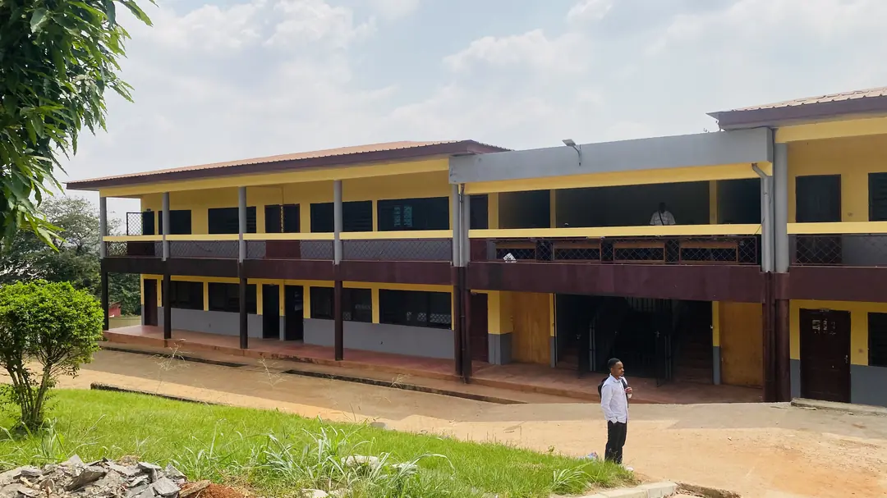
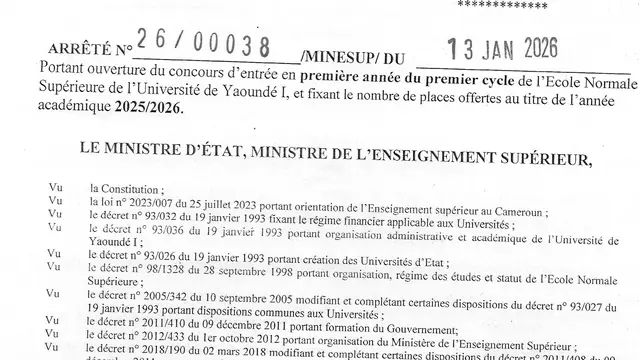

Auditeurs libres
Nouveau
Suspension du recrutement des auditeurs libres
À partir de l'année académique 2026-2027, l'ENS ne recrute plus de nouveaux auditeurs libres.
Département d'Informatique et des Technologies Éducatives
Depuis 2007, le département forme des professeurs capables d'enseigner l'informatique dans les lycées et collèges et de conduire l'intégration du numérique dans le système éducatif.

Auditeurs libres : le recrutement de nouveaux auditeurs libres est suspendu à partir de l'année académique 2026-2027. En savoir plus
Le DITE forme les spécialistes des systèmes numériques d'apprentissage et de gestion de l'éducation. Ses diplômés enseignent l'informatique et les TIC, pilotent des projets d'intégration des TICE et gèrent des systèmes d'information de l'éducation.
Découvrir le départementPour les titulaires d'un baccalauréat scientifique admis au concours. Niveaux 1 à 3.
Voir le programme du premier cyclePour les titulaires d'une licence admis au concours. Niveaux 4 et 5.
Voir le programme du second cycleÀ partir de l'année académique 2026-2027, l'ENS ne recrute plus de nouveaux auditeurs libres.

Filière Mathématiques-Informatique : 60 places au premier cycle, 40 au second. Conditions, dossier et dates.
Le Conseil d'administration fixe les frais à 250 000 FCFA par année académique, plus 20 000 FCFA de frais de dossier.